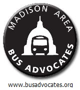

Madison’s Metro Transit needs a skeletal snow emergency plan. Our winters are harsh; we can have excessive snowfalls, and conditions are not always amenable to a “business as usual” format. So despite all our technology, there are simply times when we need a contingency plan, as during the recent blizzard of Thursday, Dec. 20. Fortunately, Wisconsin’s governor declared a state of emergency that day so all government offices, schools, and other enterprises uniformly shut down.
But the next day, despite entreaties from the sheriff and others to stay off the roads, many people had to travel. For example, UW-Madison’s campus insisted staff and students conduct regular business (it was finals week.) City of Madison offices opened.
Madison is also home to a number of hospitals and state emergency operations, neither of which can just take a break when the weather is bad outside. Madison is the state capital and county seat. It always needs to stay operative, even if in a very limited way. But since Metro did not feel that it could run all its weekday routes safely that Friday, Dec. 21, it shut down completely.
And whose safety is being considered by this PUBLIC agency? We are told that buses stop running when it is deemed dangerous for the drivers. Everyone’s safety should be a consideration. There is a big difference between county roads, and side streets on the one hand, and major arterials on the other. One point of having bus service at a time when roads still are not fully cleared is to avoid having people on the roads, whether in their own cars, in taxis, or as pedestrians (in the street since sidewalks are full of snow).
At the moment, Metro has no snow emergency plan. It either runs full throttle or not at all. What about having emergency routing with a core staff of expert drivers?There could be emergency dormitory facilities on-site for that core. Routes could follow major arterial streets that get plowed frequently. Or they could be equipped with snowploughs themselves. When the weather is dangerous, buses could become emergency vehicles with hazard lights.
Following special skeletal snow routes, buses could avoid hills or inclines and use specially-labeled stops that were spaced only every half or three-quarters of a mile. Buses could stop in the road rather than in a slushy curb where they could get stuck.
Metro could have special vehicles for snow emergencies (ideally useful on other occasions as well). For instance, certain buses could have transmission systems more amenable to starting in slick conditions, or they could convert to four-wheel drive. Buses on the most problematic routes could be equipped with chains. And since ridership would be light anyway, Metro could explore whether smaller buses performed better than the large ones in snowy/icy conditions.
Delays might occur, but people could rely on a bus eventually coming. After all, Metro’s stated mission is: "It is the mission of Metro, through the efforts of dedicated, well trained employees, to provide safe, reliable, convenient, and efficient public transportation to the citizens and visitors of the Metro service area" (italics added).
Such suggestions are nothing new and plenty of other transit systems n northern climes have emergency plans. We should too.
 Madison Area Bus Advocates
Madison Area Bus Advocates